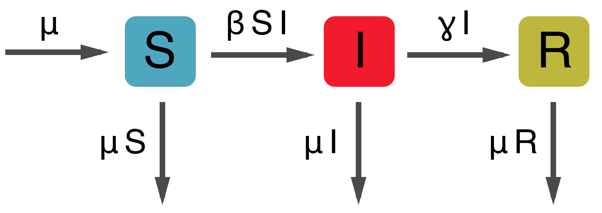

Multistrain models
In multistrain models, pathogens (or immune cells) interact via resource competition
Infection by strain $i$ creates immunity to strain $i$, but also to strain $j$
Consuming antigen $i$ by clone $x$ depletes antigen $i$ for consumption by clone $y$
Simple SIR model
$dS/dt = \beta S I$
$dI/dt = \beta S I - \gamma I$
$dR/dt = \gamma I$
Simple SIR behavior
SIR model with vital dynamics

$dS/dt = \mu - \beta S I - \mu S$
$dI/dt = \beta S I - \gamma I - \mu I$
$dR/dt = \gamma I - \mu R$
Fundamental reproductive number
Growth when 100% of population is susceptible
$$dI/dt = \beta S I - \gamma I - \mu I = \beta I - \gamma I - \mu I = (\beta - \gamma - \mu) I$$
$$R_0 = \frac{\beta}{\gamma + \mu}$$
SIR with vital dynamics behavior
Solving for endemic equilibrium
Equilibrium when $S$, $I$ and $R$ remain constant through time
$$dI/dt = 0 = \beta S^* I^* - \gamma I^* - \mu I^*$$
$$\beta S^* I^* = \gamma I^* + \mu I^*$$
$$\beta S^* = \gamma + \mu$$
$$S^* = \frac{\gamma + \mu}{\beta} = \frac{1}{R_0}$$
With this equation, we can solve for equilibrium infecteds
$$I^* = \frac{\mu}{\beta} (R_0 - 1)$$
Two-strain SIR model, independence between strains
All the following have host birth/death arrows omitted for clarity
Two-strain SIR model, cross-immunity mediated through transmission
Two-strain SIR model, cross-immunity mediated through susceptibility

Variety of ways to parameterize interactions
Two-strain SIR model, cross-immunity through polarizing immunity

Exercise: invasion of second strain into an endemic population
Assuming the model of polarizing immunity, allow a single strain to reach endemic equilibrium
$$S^*_1 = \frac{1}{R_0}$$, $$I^*_1 = \frac{\mu}{\beta} (R_0 - 1)$$
After strain 1 equilibrium is reached, allow strain 2 to enter the population. Strains share $R_0, \beta, \gamma$ parameters.
Questions: What is the endemic equilibrium $S^*_2$ for strain 2? Given $S^*_2$, what is the initial growth rate of strain 2? What effect does $\sigma$ have on this growth rate? When can strain 2 invade?